library(mashr)data <- get(load("../output/death_time_cor_nonmash.rda"))
betahat <- data$betahat
sebetahat <- data$sebetahat
zdat <- betahat/sebetahatcommon_samples <- get(load("../output/common_samples.rda"))
tissue_labels <- read.table(file = "../data/GTEX_V6/samples_id.txt")[,3]
gene_names <- as.character(read.table(file = "../data/GTEX_V6/gene_names_GTEX_V6.txt")[,1])
gene_names_1 <- as.character(sapply(gene_names, function(x) return(strsplit(x, "[.]")[[1]][1])))
U <- unique(tissue_labels)person_tissue_genes <- get(load("../output/person_tissue_genes_voom.rda"))
sample_attributes <- get(load("../output/sample_attributes_filtered.rda"))times <- strsplit(as.character(sample_attributes$DTHTIME), "[:]")
time_stamp <- unlist(lapply(times, function(x){
y <- as.numeric(x[1])
z <- as.numeric(x[2])
w <- y*60+z
return(w)
}))/(24*60)
cos_times <- cos(2*pi*time_stamp)
uncos_times <- 2*pi*time_stamp
na_indices <- which(is.na(cos_times))
person_tissue_genes_1 <- person_tissue_genes[-na_indices,,]
cos_times_1 <- cos_times[-na_indices]
uncos_times_1 <- uncos_times[-na_indices]mash_dat <- get(load("../output/mash_circadian_canonical_pool.rda"))barplot(get_estimated_pi(mash_dat), las = 2, cex.names = 0.3)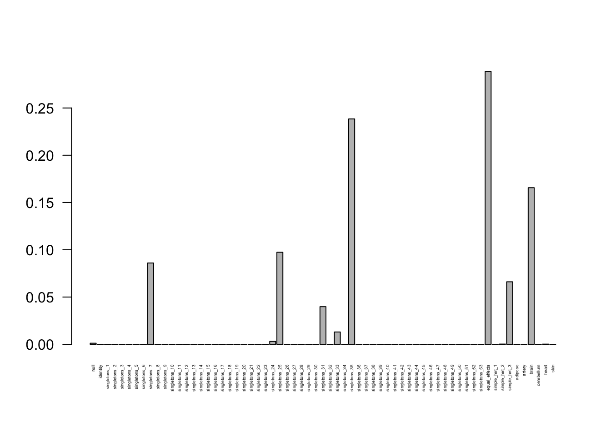
U[c(7, 25, 31, 33, 35)]## [1] Bladder Cervix - Endocervix Fallopian Tube
## [4] Heart - Left Ventricle Liver
## 53 Levels: Adipose - Subcutaneous ... Whole Bloodliver_specific <- apply(mash_dat$result$lfsr, 1, function(x) {
if(x[35] < 0.05 && min(x[-35])> 0.9){
return(1)
}else{
return(0)
}
})length(which(liver_specific==1))## [1] 610lfdr_diff <- apply(mash_dat$result$lfdr, 1, function(x) {
y <- median(x[-grep("Liver", U)]) - median(x[grep("Liver", U)])
return(y)
})names <- gene_names_1[order(lfdr_diff, decreasing = TRUE)[1:50]]
names[1:10]## [1] "ENSG00000158321" "ENSG00000173786" "ENSG00000269893"
## [4] "ENSG00000186017" "ENSG00000137776" "ENSG00000108179"
## [7] "ENSG00000232573" "ENSG00000103148" "ENSG00000272777"
## [10] "ENSG00000066583"out <- mygene::queryMany(names, scopes="ensembl.gene", fields=c("name", "summary"), species="human");## Finished
## Pass returnall=TRUE to return lists of duplicate or missing query terms.cbind.data.frame(out$name, out$summary)## out$name
## 1 AUTS2, activator of transcription and developmental regulator
## 2 2',3'-cyclic nucleotide 3' phosphodiesterase
## 3 small nucleolar RNA host gene 8
## 4 zinc finger protein 566
## 5 SAFB like transcription modulator
## 6 peptidylprolyl isomerase F
## 7 ribosomal protein L3 pseudogene 4
## 8 NPR3 like, GATOR1 complex subunit
## 9 <NA>
## 10 isochorismatase domain containing 1
## 11 carnosine N-methyltransferase 1
## 12 protein phosphatase 3 regulatory subunit B, alpha
## 13 rotatin
## 14 zinc finger protein 26
## 15 <NA>
## 16 small integral membrane protein 8
## 17 kelch domain containing 1
## 18 SUMO1/sentrin/SMT3 specific peptidase 2
## 19 <NA>
## 20 post-GPI attachment to proteins 3
## 21 <NA>
## 22 <NA>
## 23 <NA>
## 24 <NA>
## 25 <NA>
## 26 kelch like family member 20
## 27 thioredoxin related transmembrane protein 3
## 28 heterogeneous nuclear ribonucleoprotein A1
## 29 splicing factor 1
## 30 nuclear receptor interacting protein 1
## 31 H2.0 like homeobox
## 32 serpin family A member 1
## 33 GTF2I repeat domain containing 2B
## 34 nicotinamide riboside kinase 1
## 35 heterogeneous nuclear ribonucleoprotein A1-like 2
## 36 zinc finger AN1-type containing 4
## 37 pleckstrin homology like domain family B member 2
## 38 heparan-alpha-glucosaminide N-acetyltransferase
## 39 <NA>
## 40 <NA>
## 41 heterogeneous nuclear ribonucleoprotein L pseudogene 2
## 42 small nucleolar RNA host gene 14
## 43 <NA>
## 44 DNAJC9 antisense RNA 1
## 45 RAB11 family interacting protein 5
## 46 RNA binding motif protein 25
## 47 ERCC excision repair 5, endonuclease
## 48 <NA>
## 49 argonaute 3, RISC catalytic component
## 50 <NA>
## out$summary
## 1 This gene has been implicated in neurodevelopment and as a candidate gene for numerous neurological disorders, including autism spectrum disorders, intellectual disability, and developmental delay. Mutations in this gene have also been associated with non-neurological disorders, such as acute lymphoblastic leukemia, aging of the skin, early-onset androgenetic alopecia, and certain cancers. Alternative splicing results in multiple transcript variants encoding different isoforms.
## 2 <NA>
## 3 <NA>
## 4 <NA>
## 5 <NA>
## 6 The protein encoded by this gene is a member of the peptidyl-prolyl cis-trans isomerase (PPIase) family. PPIases catalyze the cis-trans isomerization of proline imidic peptide bonds in oligopeptides and accelerate the folding of proteins. This protein is part of the mitochondrial permeability transition pore in the inner mitochondrial membrane. Activation of this pore is thought to be involved in the induction of apoptotic and necrotic cell death.
## 7 <NA>
## 8 The function of the encoded protein is not known.
## 9 <NA>
## 10 <NA>
## 11 The protein encoded by this gene is a methyltransferase that converts carnosine to anserine, a dipeptide found abundantly in skeletal muscle. The encoded protein can methylate other dipeptides as well. Three transcript variants encoding two different isoforms have been found for this gene.
## 12 <NA>
## 13 This gene encodes a large protein whose specific function is unknown. Absence of the orthologous protein in mouse results in embryonic lethality with deficient axial rotation, abnormal differentiation of the neural tube, and randomized looping of the heart tube during development. In human, mutations in this gene are associated with polymicrogyria with seizures. In human fibroblasts this protein localizes at the ciliary basal bodies. Given the intracellular localization of this protein and the phenotypic effects of mutations, this gene is suspected of playing a role in the maintenance of normal ciliary structure which in turn effects the developmental process of left-right organ specification, axial rotation, and perhaps notochord development.
## 14 <NA>
## 15 <NA>
## 16 <NA>
## 17 <NA>
## 18 SUMO1 (UBL1; MIM 601912) is a small ubiquitin-like protein that can be covalently conjugated to other proteins. SENP2 is one of a group of enzymes that process newly synthesized SUMO1 into the conjugatable form and catalyze the deconjugation of SUMO1-containing species.
## 19 <NA>
## 20 This gene encodes a glycosylphosphatidylinositol (GPI)-specific phospholipase that primarily localizes to the Golgi apparatus. This ubiquitously expressed gene is predicted to encode a seven-transmembrane protein that removes unsaturated fatty acids from the sn-2 position of GPI. The remodeling of the constituent fatty acids on GPI is thought to be important for the proper association between GPI-anchored proteins and lipid rafts. The tethering of proteins to plasma membranes via posttranslational GPI-anchoring is thought to play a role in protein sorting and trafficking. Mutations in this gene cause the autosomal recessive neurologic disorder hyperphosphatasia with mental retardation syndrome 4 (HPMRS4). Alternative splicing results in multiple transcript variants encoding distinct isoforms.
## 21 <NA>
## 22 <NA>
## 23 <NA>
## 24 <NA>
## 25 <NA>
## 26 The protein encoded by this gene is a member of the kelch family of proteins, which is characterized by a 44-56 amino acid repeat motif. The kelch motif appears in many different polypeptide contexts and contains multiple potential protein-protein contact sites. Members of this family are present both throughout the cell and extracellularly, with diverse activities.
## 27 This gene encodes a member of the disulfide isomerase (PDI) family of endoplasmic reticulum (ER) proteins that catalyze protein folding and thiol-disulfide interchange reactions. The canonical protein encoded by this gene has an N-terminal ER-signal sequence, a catalytically active thioredoxin domain, one transmembrane domain and a C-terminal ER-retention sequence. This gene is expressed in many tissues but has its highest expression in heart and skeletal muscle. It is expressed in the retinal neuroepithelium and lens epithelium in the developing murine eye and haploinsufficiency of this gene in humans and zebrafish is associated with microphthalmia. Alternative splicing results in multiple transcript variants encoding distinct isoforms.
## 28 This gene encodes a member of a family of ubiquitously expressed heterogeneous nuclear ribonucleoproteins (hnRNPs), which are RNA-binding proteins that associate with pre-mRNAs in the nucleus and influence pre-mRNA processing, as well as other aspects of mRNA metabolism and transport. The protein encoded by this gene is one of the most abundant core proteins of hnRNP complexes and plays a key role in the regulation of alternative splicing. Mutations in this gene have been observed in individuals with amyotrophic lateral sclerosis 20. Multiple alternatively spliced transcript variants have been found. There are numerous pseudogenes of this gene distributed throughout the genome.
## 29 This gene encodes a nuclear pre-mRNA splicing factor. The encoded protein specifically recognizes the intron branch point sequence at the 3' splice site, together with the large subunit of U2 auxiliary factor (U2AF), and is required for the early stages of spliceosome assembly. It also plays a role in nuclear pre-mRNA retention and transcriptional repression. The encoded protein contains an N-terminal U2AF ligand motif, a central hnRNP K homology motif and quaking 2 region which bind a key branch-site adenosine within the branch point sequence, a zinc knuckles domain, and a C-terminal proline-rich domain. Alternative splicing results in multiple transcript variants.
## 30 Nuclear receptor interacting protein 1 (NRIP1) is a nuclear protein that specifically interacts with the hormone-dependent activation domain AF2 of nuclear receptors. Also known as RIP140, this protein modulates transcriptional activity of the estrogen receptor.
## 31 <NA>
## 32 The protein encoded by this gene is secreted and is a serine protease inhibitor whose targets include elastase, plasmin, thrombin, trypsin, chymotrypsin, and plasminogen activator. Defects in this gene can cause emphysema or liver disease. Several transcript variants encoding the same protein have been found for this gene.
## 33 This gene encodes a glycosylated phosphoprotein with a leucine zipper motif, two helix-loop-helix motifs (I repeats) that are similar to domains found in the TFII-I family of transcription factors, one CHARLIE8 transposable element-like sequence, and a BED zinc finger. This gene lies within a region that is deleted in Williams-Beuren syndrome. Alternatively spliced variants which encode different protein isoforms have been described; however, not all variants have been fully characterized.
## 34 Nicotinamide adenine dinucleotide (NAD+) is essential for life in all organisms, both as a coenzyme for oxidoreductases and as a source of ADP-ribosyl groups used in various reactions. Nicotinic acid and nicotinamide, collectively known as niacin, are the vitamin precursors of NAD+. Nicotinamide riboside kinases, such as NRK1, function to synthesize NAD+ through nicotinamide mononucleotide using nicotinamide riboside as the precursor (Bieganowski and Brenner, 2004 [PubMed 15137942]).
## 35 <NA>
## 36 <NA>
## 37 <NA>
## 38 This gene encodes a lysosomal acetyltransferase, which is one of several enzymes involved in the lysosomal degradation of heparin sulfate. Mutations in this gene are associated with Sanfilippo syndrome C, one type of the lysosomal storage disease mucopolysaccaridosis III, which results from impaired degradation of heparan sulfate.
## 39 <NA>
## 40 <NA>
## 41 <NA>
## 42 <NA>
## 43 <NA>
## 44 <NA>
## 45 <NA>
## 46 <NA>
## 47 This gene encodes a single-strand specific DNA endonuclease that makes the 3' incision in DNA excision repair following UV-induced damage. The protein may also function in other cellular processes, including RNA polymerase II transcription, and transcription-coupled DNA repair. Mutations in this gene cause xeroderma pigmentosum complementation group G (XP-G), which is also referred to as xeroderma pigmentosum VII (XP7), a skin disorder characterized by hypersensitivity to UV light and increased susceptibility for skin cancer development following UV exposure. Some patients also develop Cockayne syndrome, which is characterized by severe growth defects, mental retardation, and cachexia. Read-through transcription exists between this gene and the neighboring upstream BIVM (basic, immunoglobulin-like variable motif containing) gene.
## 48 <NA>
## 49 This gene encodes a member of the Argonaute family of proteins which play a role in RNA interference. The encoded protein is highly basic, contains a PAZ domain and a PIWI domain, and may play a role in short-interfering-RNA-mediated gene silencing. This gene is located on chromosome 1 in a tandem cluster of closely related family members including argonaute 4 and eukaryotic translation initiation factor 2C, 1. Two transcript variants encoding distinct isoforms have been identified for this gene.
## 50 <NA>imp_genes <- gene_names_1[which(liver_specific==1)]write.table(imp_genes, file = "../utilities/circadian_mash_2/liver.txt", quote = FALSE, row.names = FALSE, col.names = FALSE)pathway2 <- read.delim("../utilities/circadian_mash_2/liver_pathway.tab")
if(length(which(pathway2$q.value < 0.05)) > 2){
pathway2 <- pathway2[which(pathway2$q.value < 0.05),]
}
maxpath = 75
pathway <- pathway2[1:min(maxpath, dim(pathway2)[1]), ]
ensembl_genes <- pathway$members_input_overlap
pathway_list_genes <- sapply(ensembl_genes, function(x) return(strsplit(as.character(x), "; ")))
all_genes <- Reduce(union, pathway_list_genes)
pathway_mat <- matrix(0, length(pathway_list_genes), length(all_genes))
for(l in 1:dim(pathway_mat)[1]){
pathway_mat[l, match(pathway_list_genes[[l]], all_genes)] <- 1
}
pathway_bimat <- (pathway_mat)%*%t(pathway_mat)
pathway_bimat_prop <- diag(1/sqrt(diag(pathway_bimat)), dim(pathway_bimat)[1]) %*% pathway_bimat %*% diag(1/sqrt(diag(pathway_bimat)), dim(pathway_bimat)[1])
col=c(rev(rgb(seq(1,0,length=1000),1,seq(1,0,length=1000))),
rgb(1,seq(1,0,length=1000),seq(1,0,length=1000)))
heatmap(pathway_bimat_prop, labRow = pathway$pathway, labCol = pathway$pathway, cexRow = 0.3, cexCol = 0.3, col = col, zlim = c(-1,1),
scale = "none", margins = c(5, 5))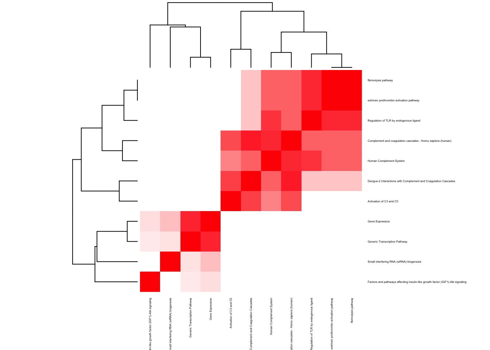
indices <- match("ENSG00000158321", gene_names_1)mash_dat$result$lfdr[indices,]## [1] 9.999952e-01 9.999952e-01 9.999952e-01 9.999952e-01 9.999952e-01
## [6] 9.999952e-01 9.999914e-01 9.999859e-01 9.999859e-01 9.999859e-01
## [11] 9.999859e-01 9.999859e-01 9.999859e-01 9.999859e-01 9.999859e-01
## [16] 9.999859e-01 9.999859e-01 9.999859e-01 9.999859e-01 9.999859e-01
## [21] 9.999952e-01 9.999952e-01 9.999952e-01 9.999951e-01 9.999913e-01
## [26] 9.999952e-01 9.999952e-01 9.999952e-01 9.999952e-01 9.999952e-01
## [31] 9.999903e-01 9.999952e-01 9.999934e-01 9.999952e-01 2.393046e-05
## [36] 9.999952e-01 9.999952e-01 9.999952e-01 9.999952e-01 9.999952e-01
## [41] 9.999952e-01 9.999952e-01 9.999952e-01 9.999952e-01 9.999952e-01
## [46] 9.999952e-01 9.999952e-01 9.999952e-01 9.999952e-01 9.999952e-01
## [51] 9.999952e-01 9.999952e-01 9.999952e-01betahat_sebetahat_2 <- get(load("../output/death_time_cor_nonmash.rda"))
tmat <- betahat_sebetahat_2$betahat/betahat_sebetahat_2$sebetahat
plot(1:53, tmat[,indices], type = "b", xlab = "tissues", ylab="t scores")
text(1:53, tmat[,indices], U, cex=0.3)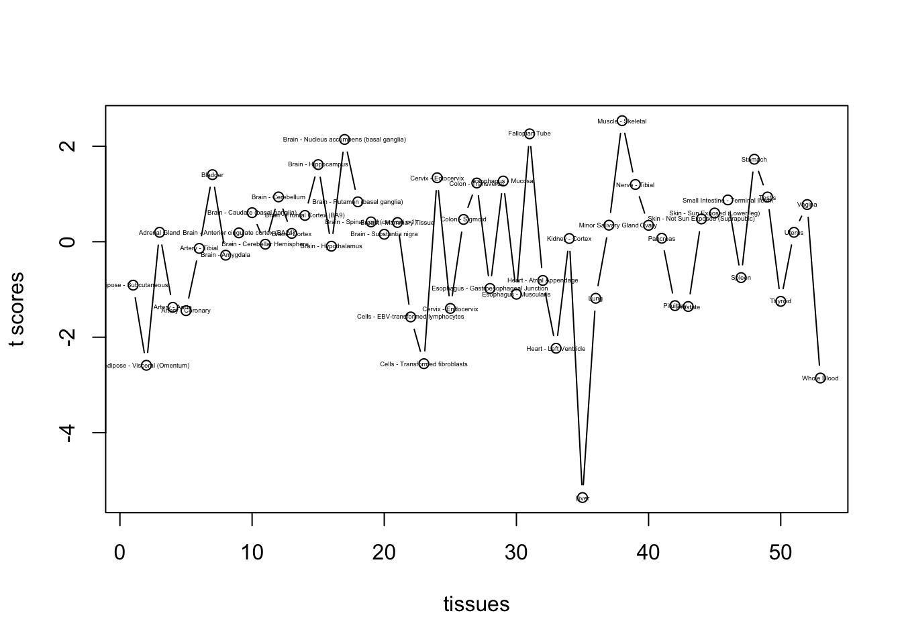
par(mfrow=c(3,3))
for(j in 1:53){
plot(uncos_times_1, person_tissue_genes_1[,j, indices],
ylab = dimnames(person_tissue_genes)[[2]][j])
#lines(loess.smooth(uncos_times_1,person_tissue_genes_1[,j, indices[1]]),
# col="red", lty=2, lwd=2)
}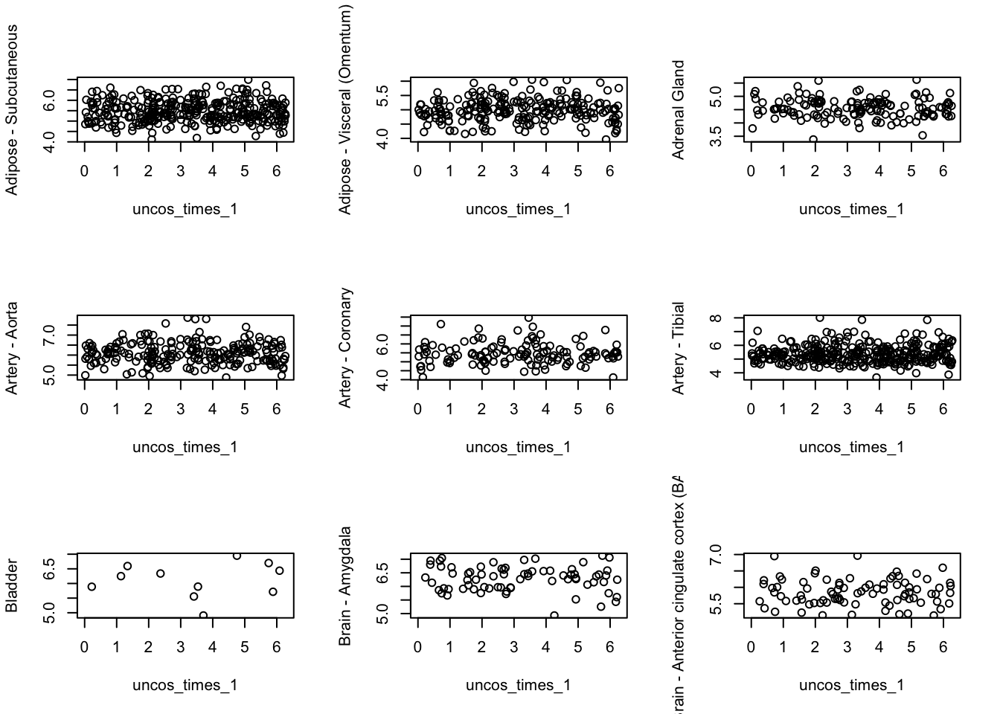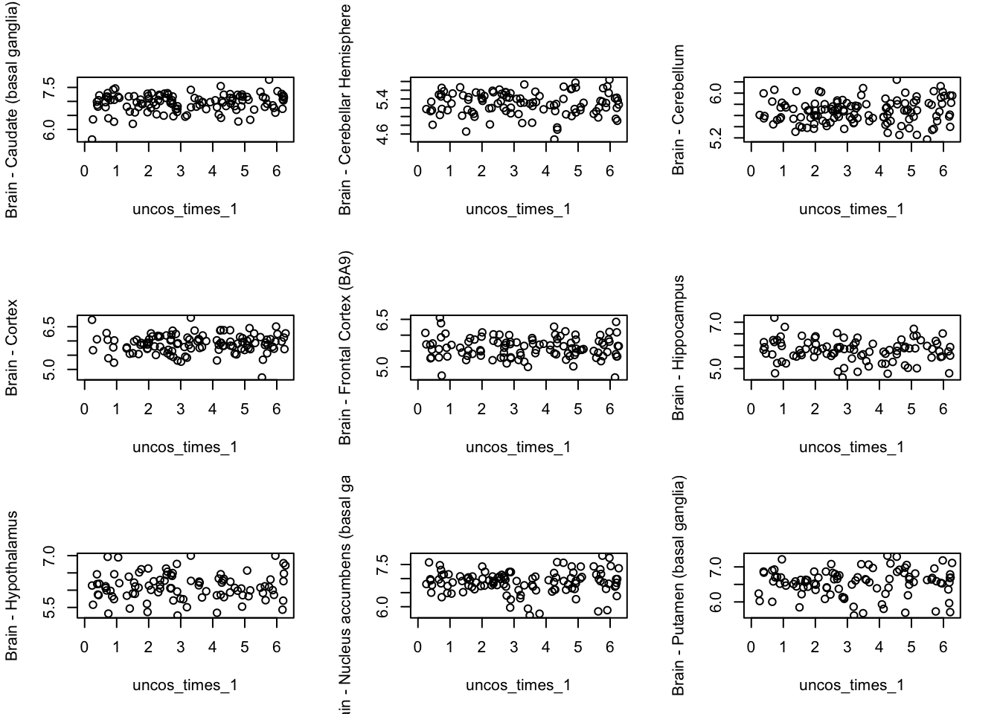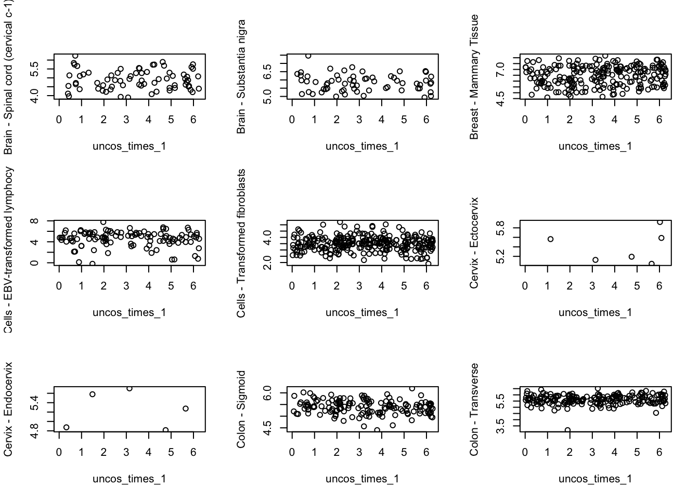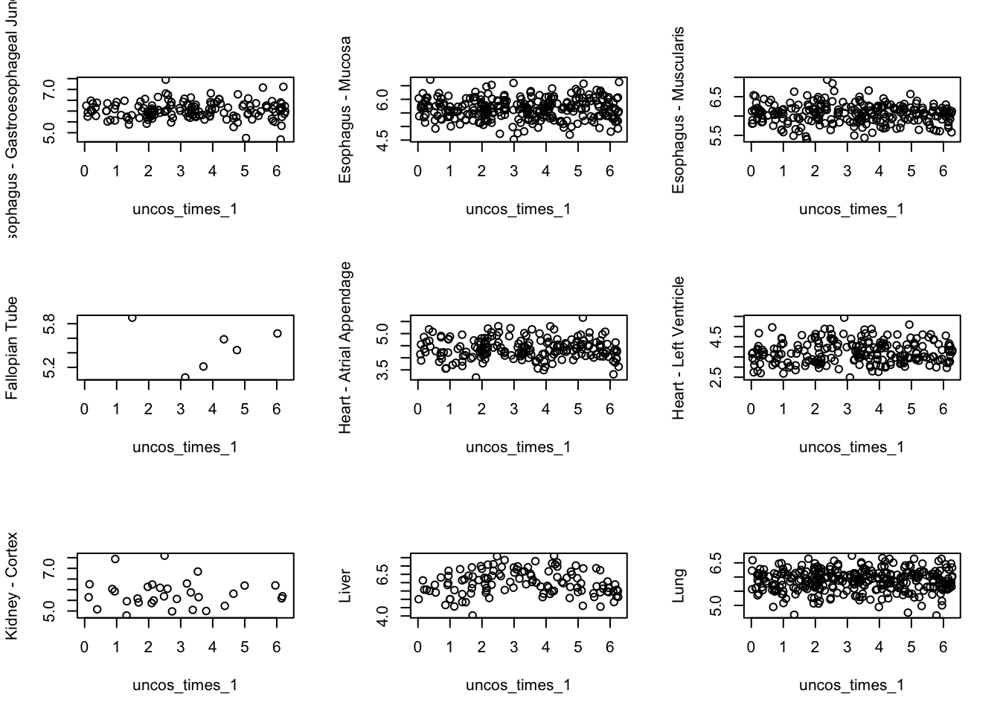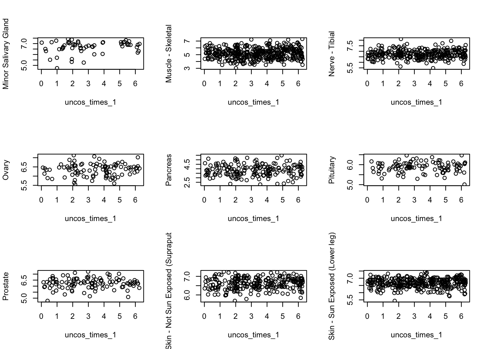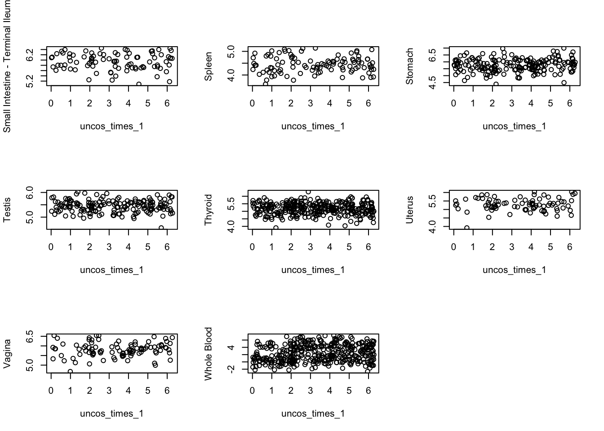
indices <- match("ENSG00000173786", gene_names_1)mash_dat$result$lfdr[indices,]## [1] 9.999046e-01 9.999046e-01 9.999046e-01 9.999046e-01 9.999046e-01
## [6] 9.999046e-01 9.998681e-01 9.998755e-01 9.998755e-01 9.998755e-01
## [11] 9.998755e-01 9.998755e-01 9.998755e-01 9.998755e-01 9.998755e-01
## [16] 9.998755e-01 9.998755e-01 9.998755e-01 9.998755e-01 9.998755e-01
## [21] 9.999046e-01 9.999046e-01 9.999046e-01 9.999040e-01 9.998868e-01
## [26] 9.999046e-01 9.999046e-01 9.999046e-01 9.999046e-01 9.999046e-01
## [31] 9.999001e-01 9.999045e-01 9.999023e-01 9.999046e-01 9.135427e-05
## [36] 9.999046e-01 9.999046e-01 9.999046e-01 9.999046e-01 9.999046e-01
## [41] 9.999046e-01 9.999046e-01 9.999046e-01 9.999046e-01 9.999046e-01
## [46] 9.999046e-01 9.999046e-01 9.999046e-01 9.999046e-01 9.999046e-01
## [51] 9.999046e-01 9.999046e-01 9.999046e-01betahat_sebetahat_2 <- get(load("../output/death_time_cor_nonmash.rda"))
tmat <- betahat_sebetahat_2$betahat/betahat_sebetahat_2$sebetahat
plot(1:53, tmat[,indices], type = "b", xlab = "tissues", ylab="t scores")
text(1:53, tmat[,indices], U, cex=0.3)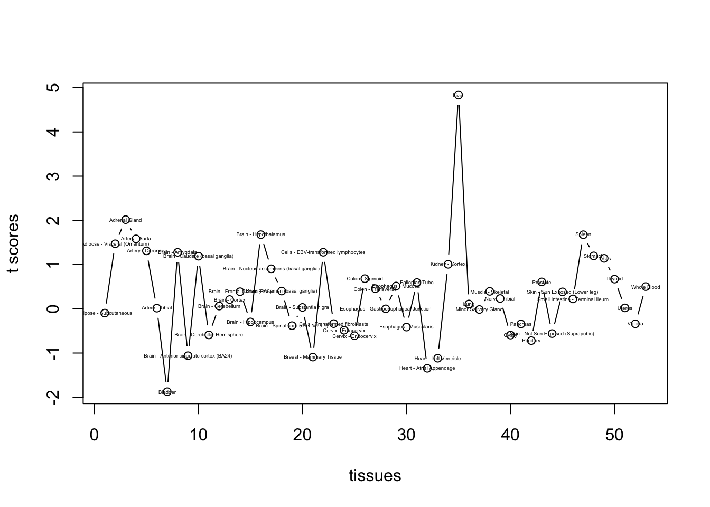
par(mfrow=c(3,3))
for(j in 1:53){
plot(uncos_times_1, person_tissue_genes_1[,j, indices],
ylab = dimnames(person_tissue_genes)[[2]][j])
#lines(loess.smooth(uncos_times_1,person_tissue_genes_1[,j, indices[1]]),
# col="red", lty=2, lwd=2)
}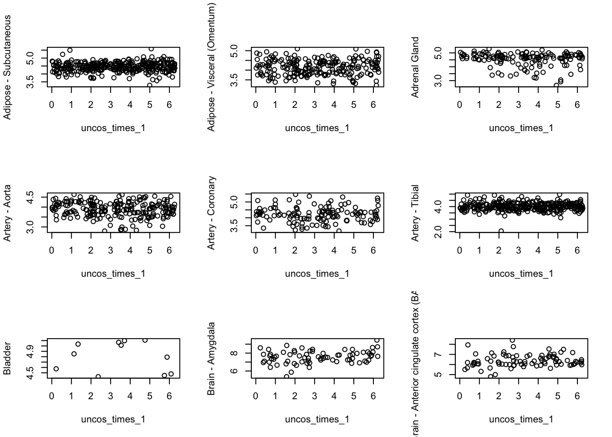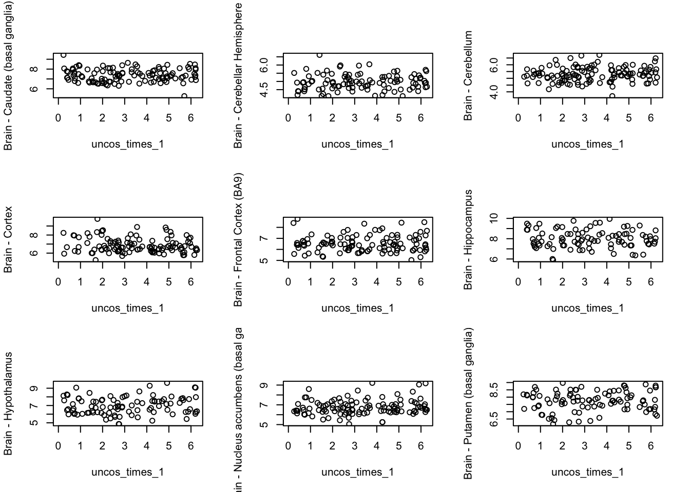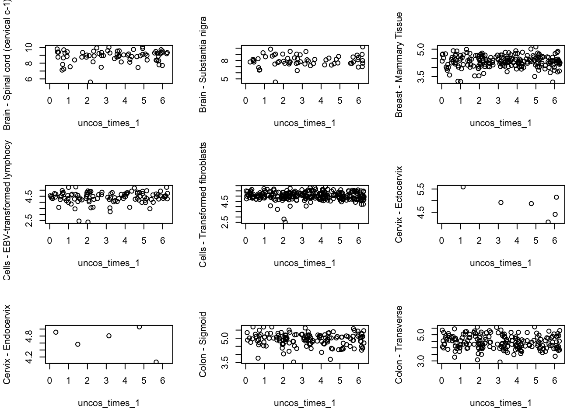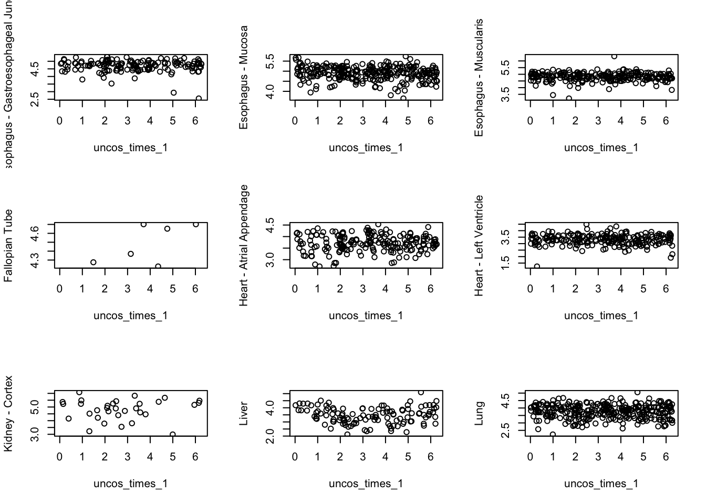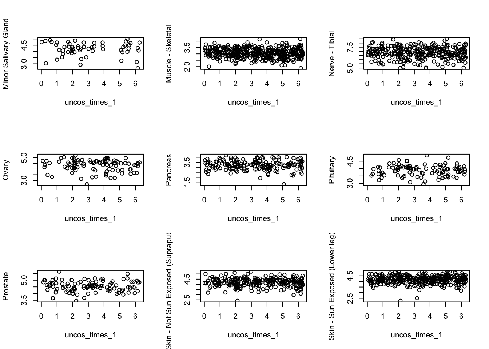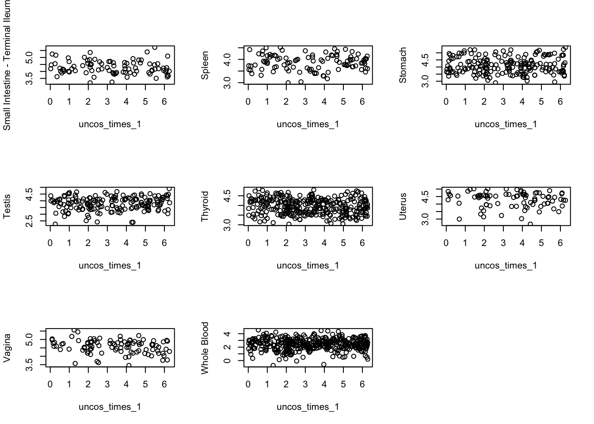
brain_specific <- apply(mash_dat$result$lfdr, 1, function(x) {
if(max(x[grep("Brain", U)]) < 0.05 && min(x[-grep("Brain", U)])> 0.9){
return(1)
}else{
return(0)
}
})which(brain_specific == 1)[1:20]## [1] 25 44 55 81 119 230 240 274 304 327 330 343 364 369 371 376 387
## [18] 424 431 437lfdr_diff <- apply(mash_dat$result$lfdr, 1, function(x) {
y <- median(x[-grep("Brain", U)]) - median(x[grep("Brain", U)])
return(y)
})names <- gene_names_1[order(lfdr_diff, decreasing = TRUE)[1:50]]
names[1:10]## [1] "ENSG00000181274" "ENSG00000138336" "ENSG00000146094"
## [4] "ENSG00000075131" "ENSG00000237846" "ENSG00000147535"
## [7] "ENSG00000198912" "ENSG00000198830" "ENSG00000139323"
## [10] "ENSG00000177791"out <- mygene::queryMany(names, scopes="ensembl.gene", fields=c("name", "summary"), species="human");## Finished
## Pass returnall=TRUE to return lists of duplicate or missing query terms.cbind.data.frame(out$name, out$summary)## out$name
## 1 FRAT2, WNT signaling pathway regulator
## 2 tet methylcytosine dioxygenase 1
## 3 docking protein 3
## 4 TIMELESS interacting protein
## 5 <NA>
## 6 phospholipid phosphatase 5
## 7 chromosome 1 open reading frame 174
## 8 high mobility group nucleosomal binding domain 2
## 9 POC1 centriolar protein B
## 10 myozenin 1
## 11 acyl-CoA dehydrogenase, C-2 to C-3 short chain
## 12 mediator complex subunit 18
## 13 zinc finger and SCAN domain containing 22
## 14 serine dehydratase like
## 15 <NA>
## 16 heat shock protein family D (Hsp60) member 1 pseudogene 1
## 17 SEC63 homolog, protein translocation regulator
## 18 capping actin protein, gelsolin like
## 19 family with sequence similarity 227 member B
## 20 nucleolar and spindle associated protein 1
## 21 RNA binding motif protein 23
## 22 diphthamine biosynthesis 6
## 23 aldehyde dehydrogenase 9 family member A1
## 24 PHD finger protein 23
## 25 3-hydroxybutyrate dehydrogenase 2, pseudogene 1
## 26 NSE3 homolog, SMC5-SMC6 complex component
## 27 cleavage and polyadenylation factor I subunit 1
## 28 protein tyrosine phosphatase type IVA, member 1
## 29 ribosomal protein L17 pseudogene 36
## 30 RAB31, member RAS oncogene family
## 31 <NA>
## 32 pterin-4 alpha-carbinolamine dehydratase 2
## 33 chromosome 8 open reading frame 33
## 34 D-box binding PAR bZIP transcription factor
## 35 mannosyl (beta-1,4-)-glycoprotein beta-1,4-N-acetylglucosaminyltransferase
## 36 abhydrolase domain containing 6
## 37 <NA>
## 38 nipsnap homolog 3A
## 39 MOB kinase activator 2
## 40 <NA>
## 41 <NA>
## 42 SBDS, ribosome maturation factor
## 43 multiple EGF like domains 8
## 44 ribosomal protein L15
## 45 inosine monophosphate dehydrogenase 2
## 46 DnaJ heat shock protein family (Hsp40) member B12
## 47 COX20, cytochrome c oxidase assembly factor
## 48 MyoD family inhibitor domain containing
## 49 zinc finger CCHC-type containing 3
## 50 bromodomain and PHD finger containing 1
## out$summary
## 1 The protein encoded by this intronless gene belongs to the GSK-3-binding protein family. Studies show that this protein plays a role as a positive regulator of the WNT signaling pathway. It may be upregulated in tumor progression.
## 2 DNA methylation is an epigenetic mechanism that is important for controlling gene expression. The protein encoded by this gene is a demethylase that belongs to the TET (ten-eleven translocation) family. Members of the TET protein family play a role in the DNA methylation process and gene activation.
## 3 <NA>
## 4 The protein encoded by this gene is part of the replisome complex, a group of proteins that support DNA replication. It binds TIM, which is involved in circadian rhythm regulation, and aids in protecting cells against DNA damage and stress. Two pseudogenes and two transcript variants encoding different isoforms have been found for this gene.
## 5 <NA>
## 6 <NA>
## 7 <NA>
## 8 The protein encoded by this gene binds nucleosomal DNA and is associated with transcriptionally active chromatin. Along with a similar protein, HMGN1, the encoded protein may help maintain an open chromatin configuration around transcribable genes. The protein has also been found to have antimicrobial activity against bacteria, viruses and fungi.
## 9 POC1 proteins contain an N-terminal WD40 domain and a C-terminal coiled coil domain and are part of centrosomes. They play an important role in basal body and cilia formation. This gene encodes one of the two POC1 proteins found in humans. Mutation in this gene result in autosomal-recessive cone-rod dystrophy. Alternative splicing results in multiple transcript variants.
## 10 The protein encoded by this gene is primarily expressed in the skeletal muscle, and belongs to the myozenin family. Members of this family function as calcineurin-interacting proteins that help tether calcineurin to the sarcomere of cardiac and skeletal muscle. They play an important role in modulation of calcineurin signaling.
## 11 This gene encodes a tetrameric mitochondrial flavoprotein, which is a member of the acyl-CoA dehydrogenase family. This enzyme catalyzes the initial step of the mitochondrial fatty acid beta-oxidation pathway. Mutations in this gene have been associated with short-chain acyl-CoA dehydrogenase (SCAD) deficiency. Alternative splicing results in two variants which encode different isoforms.
## 12 MED18 is a component of the Mediator complex, which is a coactivator for DNA-binding factors that activate transcription via RNA polymerase II (Sato et al., 2003 [PubMed 12584197]).
## 13 <NA>
## 14 <NA>
## 15 <NA>
## 16 <NA>
## 17 The Sec61 complex is the central component of the protein translocation apparatus of the endoplasmic reticulum (ER) membrane. The protein encoded by this gene and SEC62 protein are found to be associated with ribosome-free SEC61 complex. It is speculated that Sec61-Sec62-Sec63 may perform post-translational protein translocation into the ER. The Sec61-Sec62-Sec63 complex might also perform the backward transport of ER proteins that are subject to the ubiquitin-proteasome-dependent degradation pathway. The encoded protein is an integral membrane protein located in the rough ER.
## 18 This gene encodes a member of the gelsolin/villin family of actin-regulatory proteins. The encoded protein reversibly blocks the barbed ends of F-actin filaments in a Ca2+ and phosphoinositide-regulated manner, but does not sever preformed actin filaments. By capping the barbed ends of actin filaments, the encoded protein contributes to the control of actin-based motility in non-muscle cells. Alternatively spliced transcript variants have been observed for this gene.
## 19 <NA>
## 20 NUSAP1 is a nucleolar-spindle-associated protein that plays a role in spindle microtubule organization (Raemaekers et al., 2003 [PubMed 12963707]).
## 21 This gene encodes a member of the U2AF-like family of RNA binding proteins. This protein interacts with some steroid nuclear receptors, localizes to the promoter of a steroid- responsive gene, and increases transcription of steroid-responsive transcriptional reporters in a hormone-dependent manner. It is also implicated in the steroid receptor-dependent regulation of alternative splicing. Multiple transcript variants encoding different isoforms have been found for this gene.
## 22 <NA>
## 23 This protein belongs to the aldehyde dehydrogenase family of proteins. It has a high activity for oxidation of gamma-aminobutyraldehyde and other amino aldehydes. The enzyme catalyzes the dehydrogenation of gamma-aminobutyraldehyde to gamma-aminobutyric acid (GABA). This isozyme is a tetramer of identical 54-kD subunits.
## 24 <NA>
## 25 <NA>
## 26 The protein encoded by this gene is part of the SMC5-6 chromatin reorganizing complex and is a member of the MAGE superfamily. This is an intronless gene.
## 27 This gene encodes a member of the Clp1 family. The encoded protein is a multifunctional kinase which is a component of the tRNA splicing endonuclease complex and a component of the pre-mRNA cleavage complex II. This protein is implicated in tRNA, mRNA, and siRNA maturation. Mutations in this gene are associated with pontocerebellar hypoplasia type 10 (PCH10). Alternatively splice transcript variants encoding different isoforms have been found for this gene.
## 28 This gene encodes a member of a small class of prenylated protein tyrosine phosphatases (PTPs), which contain a PTP domain and a characteristic C-terminal prenylation motif. The encoded protein is a cell signaling molecule that plays regulatory roles in a variety of cellular processes, including cell proliferation and migration. The protein may also be involved in cancer development and metastasis. This tyrosine phosphatase is a nuclear protein, but may associate with plasma membrane by means of its prenylation motif. Pseudogenes related to this gene are located on chromosomes 1, 2, 5, 7, 11 and X.
## 29 <NA>
## 30 Small GTP-binding proteins of the RAB family, such as RAB31, play essential roles in vesicle and granule targeting (Bao et al., 2002 [PubMed 11784320]).
## 31 <NA>
## 32 <NA>
## 33 <NA>
## 34 The protein encoded by this gene is a member of the PAR bZIP transcription factor family and binds to specific sequences in the promoters of several genes, such as albumin, CYP2A4, and CYP2A5. The encoded protein can bind DNA as a homo- or heterodimer and is involved in the regulation of some circadian rhythm genes.
## 35 There are believed to be over 100 different glycosyltransferases involved in the synthesis of protein-bound and lipid-bound oligosaccharides. The enzyme encoded by this gene transfers a GlcNAc residue to the beta-linked mannose of the trimannosyl core of N-linked oligosaccharides and produces a bisecting GlcNAc. Multiple alternatively spliced variants, encoding the same protein, have been identified.
## 36 <NA>
## 37 <NA>
## 38 NIPSNAP3A belongs to a family of proteins with putative roles in vesicular transport (Buechler et al., 2004 [PubMed 15177564]).
## 39 <NA>
## 40 <NA>
## 41 <NA>
## 42 This gene encodes a highly conserved protein that plays an essential role in ribosome biogenesis. The encoded protein interacts with elongation factor-like GTPase 1 to disassociate eukaryotic initiation factor 6 from the late cytoplasmic pre-60S ribosomal subunit allowing assembly of the 80S subunit. Mutations within this gene are associated with the autosomal recessive disorder Shwachman-Bodian-Diamond syndrome. This gene has a closely linked pseudogene that is distally located.
## 43 The protein encoded by this gene is a single-pass type I membrane protein of unknown function that contains several EGF-like domains, Kelch repeats, and PSI domains. Defects in this gene are a cause of Carpenter syndrome 2. Two transcript variants encoding different isoforms have been found for this gene.
## 44 Ribosomes, the organelles that catalyze protein synthesis, consist of a small 40S subunit and a large 60S subunit. Together these subunits are composed of four RNA species and approximately 80 structurally distinct proteins. This gene encodes a member of the L15E family of ribosomal proteins and a component of the 60S subunit. This gene shares sequence similarity with the yeast ribosomal protein YL10 gene. Elevated expression of this gene has been observed in esophageal tumors and gastric cancer tissues, and deletion of this gene has been observed in a Diamond-Blackfan anemia (DBA) patient. As is typical for genes encoding ribosomal proteins, there are multiple processed pseudogenes of this gene dispersed through the genome.
## 45 This gene encodes the rate-limiting enzyme in the de novo guanine nucleotide biosynthesis. It is thus involved in maintaining cellular guanine deoxy- and ribonucleotide pools needed for DNA and RNA synthesis. The encoded protein catalyzes the NAD-dependent oxidation of inosine-5'-monophosphate into xanthine-5'-monophosphate, which is then converted into guanosine-5'-monophosphate. This gene is up-regulated in some neoplasms, suggesting it may play a role in malignant transformation.
## 46 DNAJB12 belongs to the evolutionarily conserved DNAJ/HSP40 family of proteins, which regulate molecular chaperone activity by stimulating ATPase activity. DNAJ proteins may have up to 3 distinct domains: a conserved 70-amino acid J domain, usually at the N terminus; a glycine/phenylalanine (G/F)-rich region; and a cysteine-rich domain containing 4 motifs resembling a zinc finger domain (Ohtsuka and Hata, 2000 [PubMed 11147971]).
## 47 This gene encodes a protein that plays a role in the assembly of cytochrome C oxidase, an important component of the respiratory pathway. It contains two transmembrane helices and localizes to the mitochondrial membrane. Mutations in this gene can cause mitochondrial complex IV deficiency, which results in ataxia and muscle hypotonia. There are multiple pseudogenes for this gene. Alternative splicing results in multiple transcript variants.
## 48 This gene product is a member of a family of proteins characterized by a specific cysteine-rich C-terminal domain, which is involved in transcriptional regulation of viral genome expression. Alternative translation initiation from an upstream non-AUG (GUG), and an in-frame, downstream AUG codon, results in the production of two isoforms, p40 and p32, respectively, which have different subcellular localization; p32 is mainly found in the cytoplasm, whereas p40 is targeted to the nucleolus. Both isoforms have transcriptional regulatory activity that is attributable to the cysteine-rich C-terminal domain. Alternative splicing results in multiple transcript variants.
## 49 <NA>
## 50 This gene encodes a bromodomain, PHD finger and chromo/Tudor-related Pro-Trp-Trp-Pro (PWWP) domain containing protein. The encoded protein is a component of the MOZ/MORF histone acetyltransferase complexes which function as a transcriptional regulators. This protein binds to the catalytic MYST domains of the MOZ and MORF proteins and may play a role in stimulating acetyltransferase and transcriptional activity of the complex. Alternative splicing results in multiple transcript variants.length(which(brain_specific==1))## [1] 652imp_genes <- gene_names_1[which(brain_specific==1)]write.table(imp_genes, file = "../utilities/circadian_mash_2/brain.txt", quote = FALSE, row.names = FALSE, col.names = FALSE)pathway2 <- read.delim("../utilities/circadian_mash_2/brain_pathway.tab")
if(length(which(pathway2$q.value < 0.05)) > 2){
pathway2 <- pathway2[which(pathway2$q.value < 0.05),]
}
maxpath = 75
pathway <- pathway2[1:min(maxpath, dim(pathway2)[1]), ]
ensembl_genes <- pathway$members_input_overlap
pathway_list_genes <- sapply(ensembl_genes, function(x) return(strsplit(as.character(x), "; ")))
all_genes <- Reduce(union, pathway_list_genes)
pathway_mat <- matrix(0, length(pathway_list_genes), length(all_genes))
for(l in 1:dim(pathway_mat)[1]){
pathway_mat[l, match(pathway_list_genes[[l]], all_genes)] <- 1
}
pathway_bimat <- (pathway_mat)%*%t(pathway_mat)
pathway_bimat_prop <- diag(1/sqrt(diag(pathway_bimat)), dim(pathway_bimat)[1]) %*% pathway_bimat %*% diag(1/sqrt(diag(pathway_bimat)), dim(pathway_bimat)[1])
col=c(rev(rgb(seq(1,0,length=1000),1,seq(1,0,length=1000))),
rgb(1,seq(1,0,length=1000),seq(1,0,length=1000)))
heatmap(pathway_bimat_prop, labRow = pathway$pathway, labCol = pathway$pathway, cexRow = 0.3, cexCol = 0.3, col = col, zlim = c(-1,1),
scale = "none", margins = c(5, 5))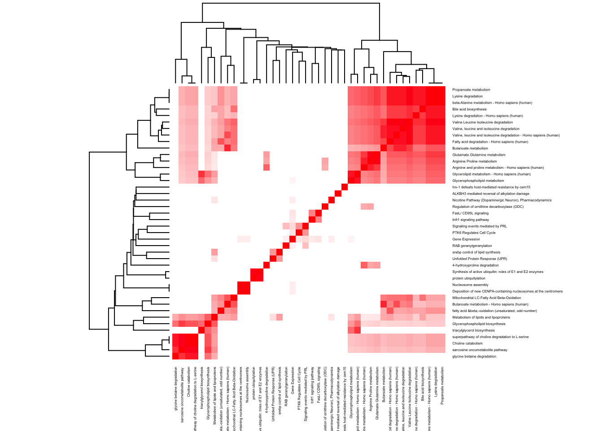
indices <- match("ENSG00000181274", gene_names_1)mash_dat$result$lfdr[indices,]## [1] 1.000000e+00 1.000000e+00 1.000000e+00 1.000000e+00 1.000000e+00
## [6] 1.000000e+00 1.000000e+00 9.258119e-10 9.258119e-10 9.258119e-10
## [11] 9.258119e-10 9.258119e-10 9.258119e-10 9.258112e-10 9.258119e-10
## [16] 9.258119e-10 9.258115e-10 9.258119e-10 9.258119e-10 9.258119e-10
## [21] 1.000000e+00 1.000000e+00 1.000000e+00 1.000000e+00 1.000000e+00
## [26] 1.000000e+00 1.000000e+00 1.000000e+00 1.000000e+00 1.000000e+00
## [31] 1.000000e+00 1.000000e+00 1.000000e+00 1.000000e+00 1.000000e+00
## [36] 1.000000e+00 1.000000e+00 1.000000e+00 1.000000e+00 1.000000e+00
## [41] 1.000000e+00 1.000000e+00 1.000000e+00 1.000000e+00 1.000000e+00
## [46] 1.000000e+00 1.000000e+00 1.000000e+00 1.000000e+00 1.000000e+00
## [51] 1.000000e+00 1.000000e+00 1.000000e+00betahat_sebetahat_2 <- get(load("../output/death_time_cor_nonmash.rda"))
tmat <- betahat_sebetahat_2$betahat/betahat_sebetahat_2$sebetahat
plot(1:53, tmat[,indices], type = "b", xlab = "tissues", ylab="t scores")
text(1:53, tmat[,indices], U, cex=0.3)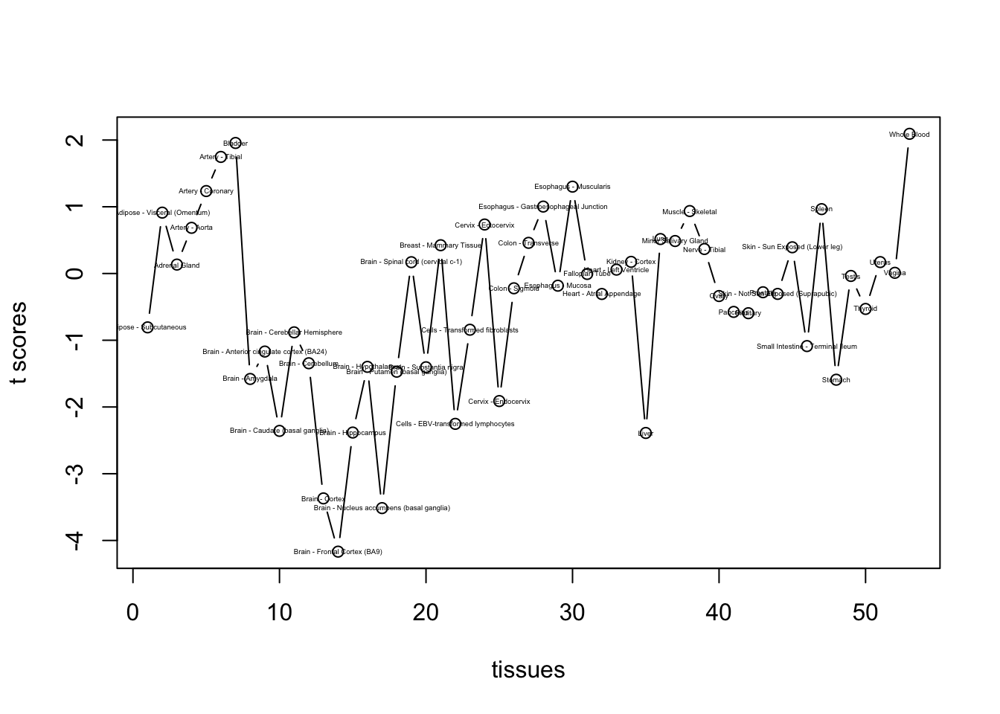
par(mfrow=c(3,3))
for(j in 1:53){
plot(uncos_times_1, person_tissue_genes_1[,j, indices],
ylab = dimnames(person_tissue_genes)[[2]][j])
#lines(loess.smooth(uncos_times_1,person_tissue_genes_1[,j, indices[1]]),
# col="red", lty=2, lwd=2)
}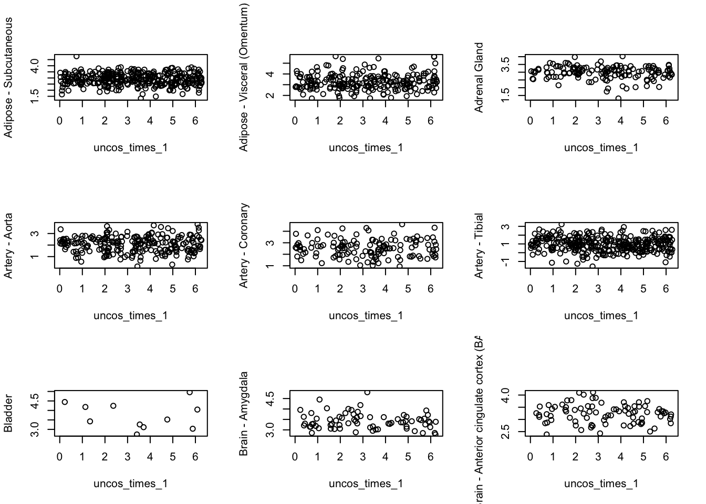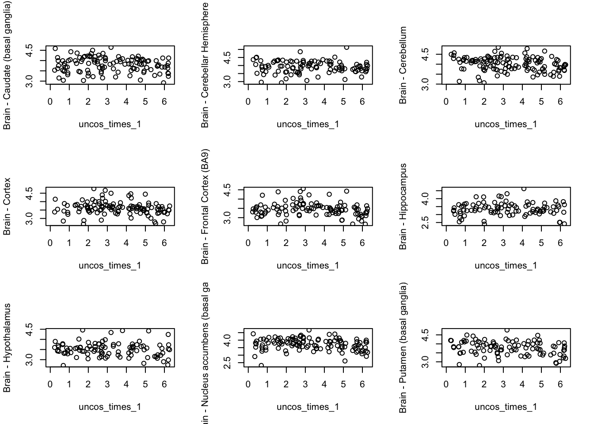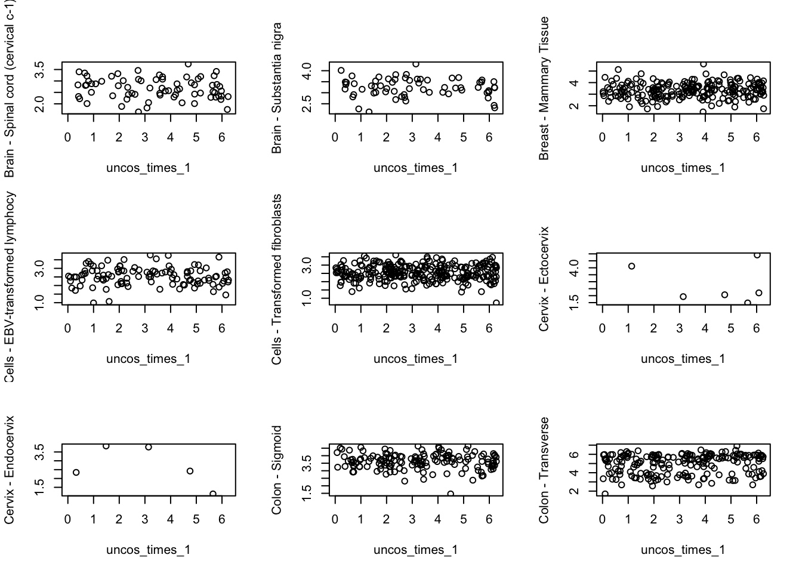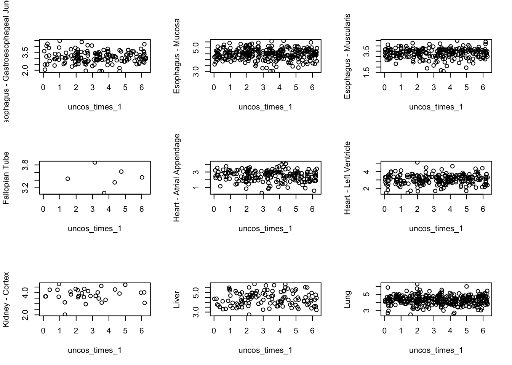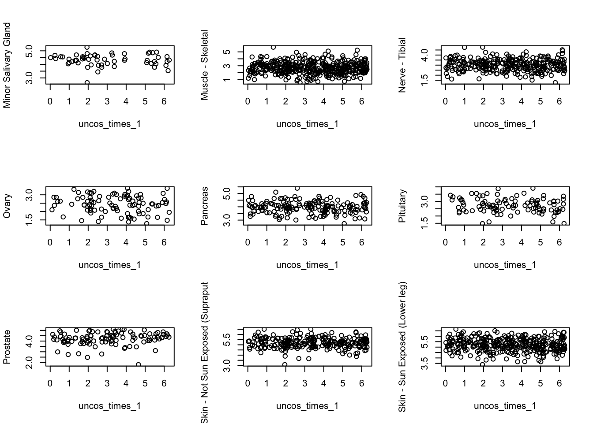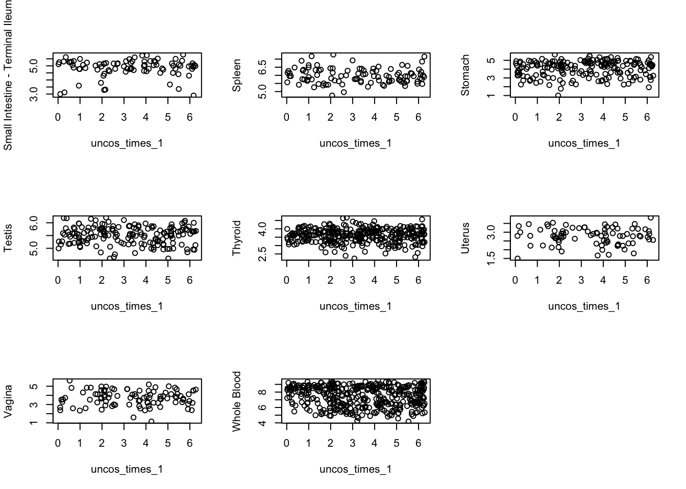
indices <- match("ENSG00000138336", gene_names_1)mash_dat$result$lfdr[indices,]## [1] 1.000000e+00 1.000000e+00 1.000000e+00 1.000000e+00 1.000000e+00
## [6] 1.000000e+00 9.999999e-01 3.340541e-08 3.340541e-08 3.340541e-08
## [11] 3.340541e-08 3.340541e-08 3.340541e-08 3.340541e-08 3.340541e-08
## [16] 3.340541e-08 3.340538e-08 3.340541e-08 3.340541e-08 3.340541e-08
## [21] 1.000000e+00 1.000000e+00 1.000000e+00 1.000000e+00 9.999999e-01
## [26] 1.000000e+00 1.000000e+00 1.000000e+00 1.000000e+00 1.000000e+00
## [31] 9.999999e-01 1.000000e+00 9.999999e-01 1.000000e+00 9.999999e-01
## [36] 1.000000e+00 1.000000e+00 1.000000e+00 1.000000e+00 1.000000e+00
## [41] 1.000000e+00 1.000000e+00 1.000000e+00 1.000000e+00 1.000000e+00
## [46] 1.000000e+00 1.000000e+00 1.000000e+00 1.000000e+00 1.000000e+00
## [51] 1.000000e+00 1.000000e+00 1.000000e+00betahat_sebetahat_2 <- get(load("../output/death_time_cor_nonmash.rda"))
tmat <- betahat_sebetahat_2$betahat/betahat_sebetahat_2$sebetahat
plot(1:53, tmat[,indices], type = "b", xlab = "tissues", ylab="t scores")
text(1:53, tmat[,indices], U, cex=0.3)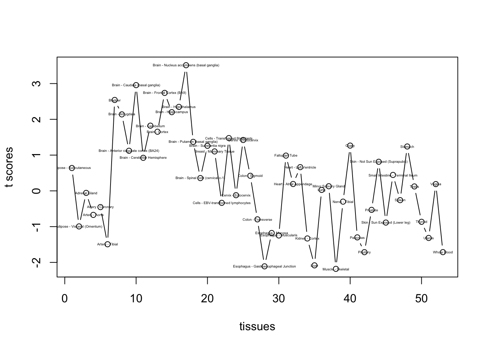
par(mfrow=c(3,3))
for(j in 1:53){
plot(uncos_times_1, person_tissue_genes_1[,j, indices],
ylab = dimnames(person_tissue_genes)[[2]][j])
#lines(loess.smooth(uncos_times_1,person_tissue_genes_1[,j, indices[1]]),
# col="red", lty=2, lwd=2)
}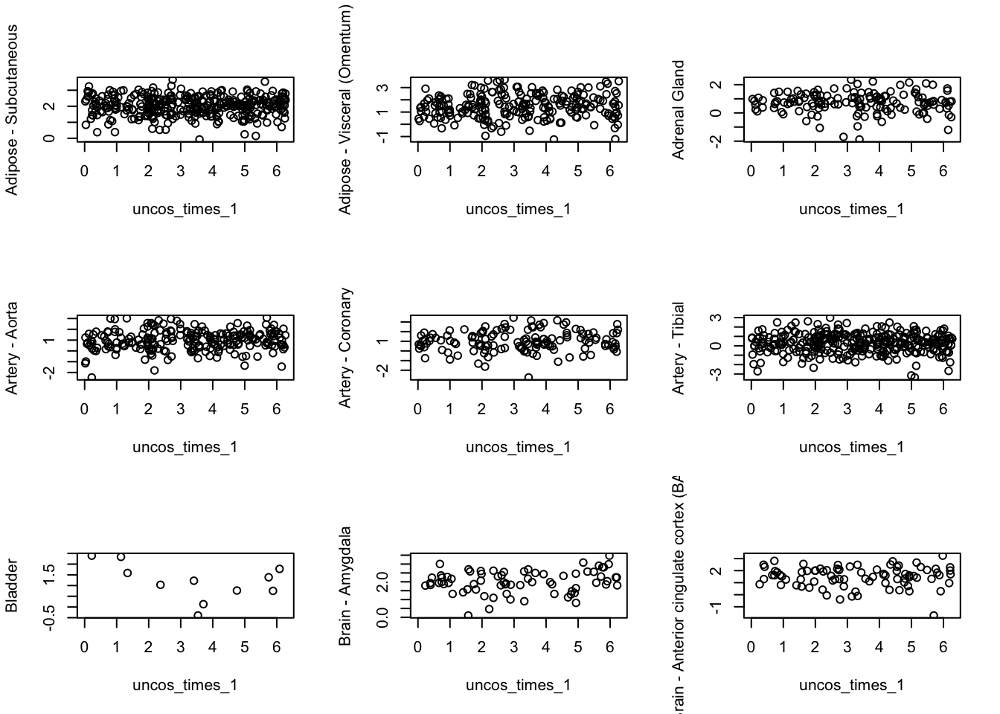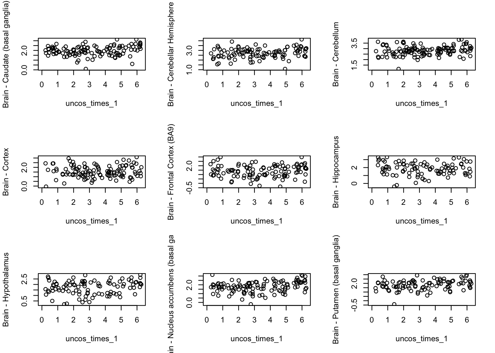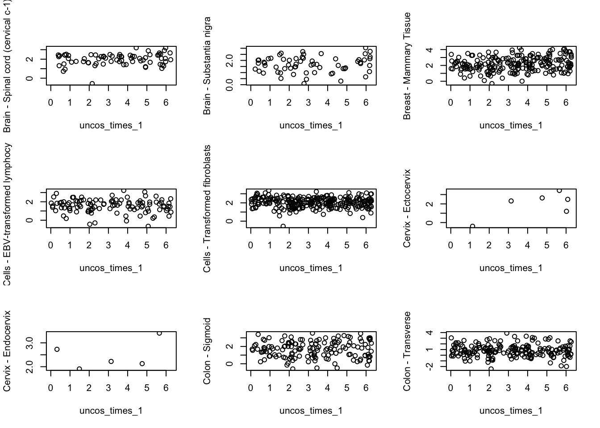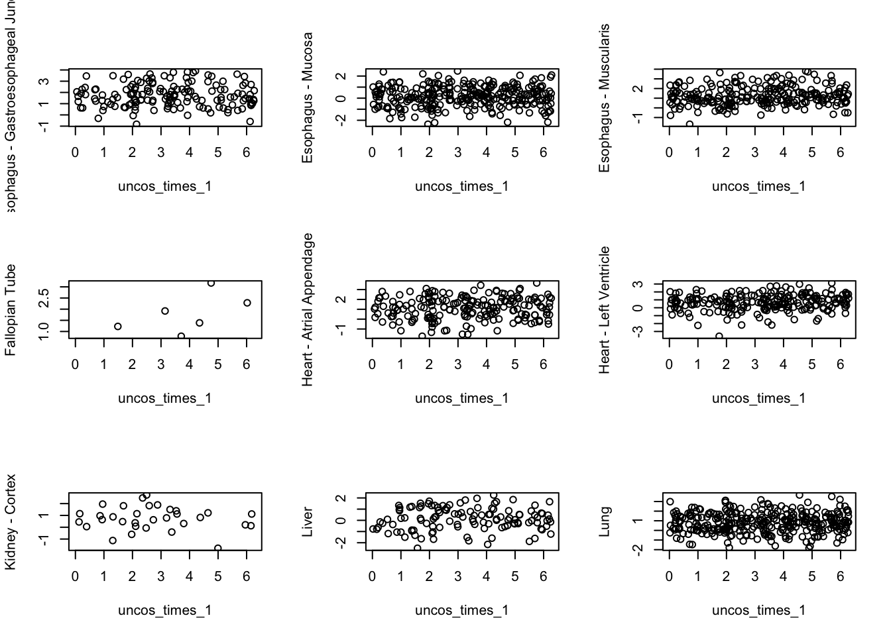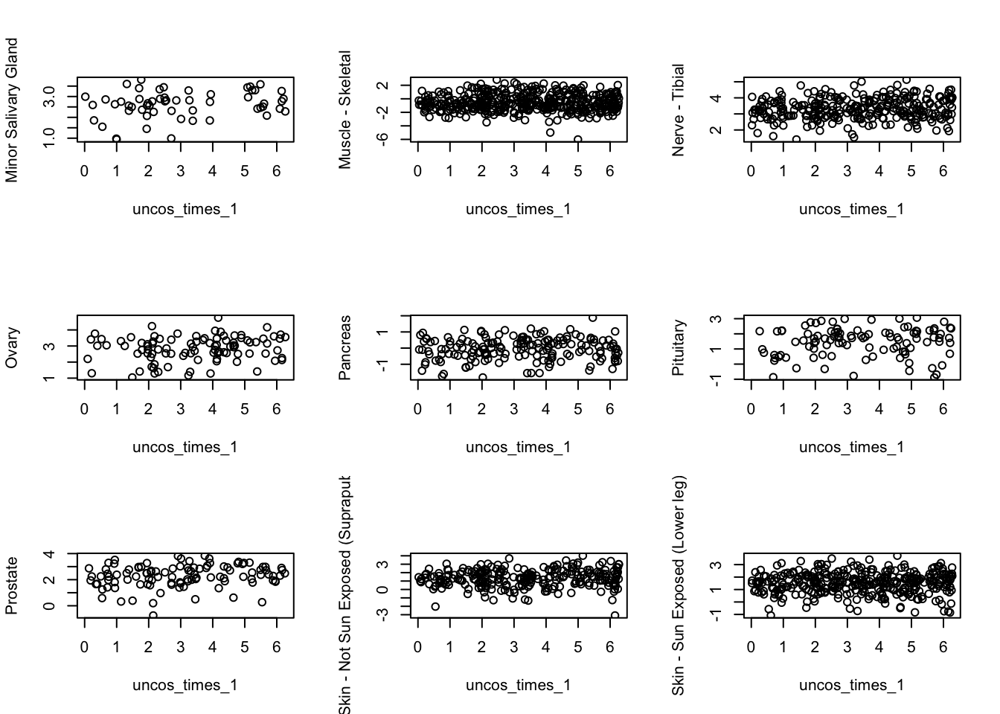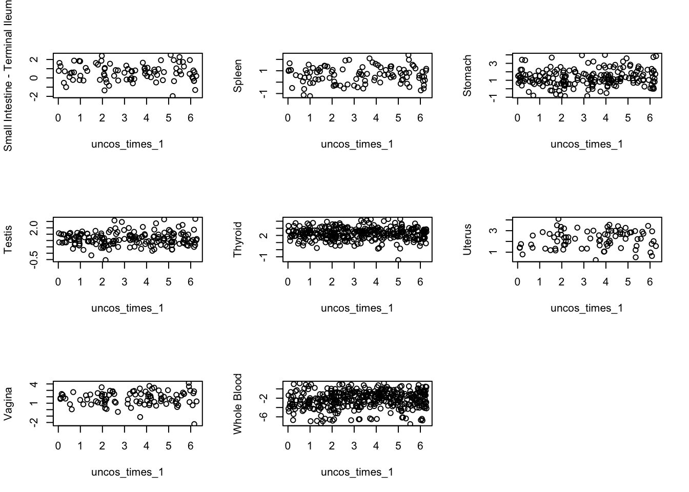
This R Markdown site was created with workflowr